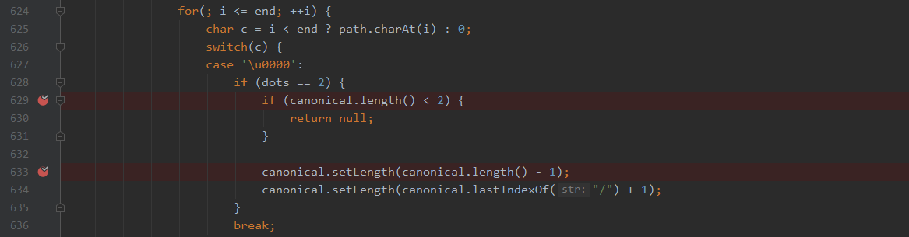

文章首发于先知社区，链接https://xz.aliyun.com/t/10039
本文主要从Jetty的两个WEB-INF信息泄露漏洞CVE-2021-28164和CVE-2021-34429，来分析如何通过编码和相对路径来绕过对敏感信息的校验，以及Jetty中对URL的PATH的解析方式和存在的问题。
漏洞信息
Jetty作为Eclipse基金会的一部分，是一个纯粹的基于Java的网页服务器和Java Servlet容器，其支持最新的Java Servlet API，同时支持WebSocket，SPDY，HTTP/2协议。
在Jetty9.4.37版本中，为了符合RFC3986中的规范，选择性地支持可能有歧义解释的URI，默认模式允许URL编码，简单看下RFC3986（替代RFC2396）的规定
.和..称为点段，都是为路径名层次结构中的相对引用而定义的，它们在一些操作系统文件目录结构中分别代表当前目录和父目录。但是与文件系统不同的是，这些点段仅在 URI 路径中解释层次结构，并作为解析过程的一部分被删除。也就是说在解析URI路径时，需要先处理.和..
Jetty为了符合这种处理方式，却导致了一系列的漏洞产生，首先是在9.4.39版本中修复了CVE-2021-28164，然后出现了新的绕过，其又在9.4.43版本中修复了CVE-2021-34429。
漏洞利用
本文将选取Jetty 9.4.37、9.4.40、9.4.43三个版本来解析漏洞如何发生与其如何修复。
CVE-2021-28164
此漏洞环境可以vulhub上搭建，是9.4.37版本，/%2e/WEB-INF/web.xml直接可以读取web.xml
payload：/%2e/WEB-INF/web.xml
CVE-2021-34429
本地搭建环境Jetty 9.4.40（ps:懒得新建项目，勿在意项目名）
- payload1：
/%u002e/WEB-INF/web.xml
这个payload可以看作CVE-2021-28164的绕过
- payload2:
/.%00/WEB-INF/web.xml
这个payload是由多个解析问题导致
- payload3：
/a/b/..%00/WEB-INF/web.xml(这里是两层，你没有看错，下文分析原因)
漏洞分析
接下来我们将从源码角度，依次分析漏洞如何产生，由于CVE-2021-34429中的payload1是对CVE-2021-28164的绕过，我们直接调试Jetty 9.4.40版本。这里使用远程调试的方式，一开始搜教程一直调试无法成功，最后发现端口从8787设置到4000行了,参考how-to-debug-in-jetty-source-code)**，具体原因未研究。
由于漏洞主要发生在URI解析过程中，所以我们可以直接在org.eclipse.jetty.http.HttpURI.java:Parse函数中下断点，开启调试
然后使用/%u002e/WEB-INF/web.xml发包，跟踪代码执行
当解析完成path之后，会先调用canonicalPath函数，这是漏洞产生的第一个重点函数，主要是用于路径的规范化，也就是处理.和..，我们先直接跳过
由于是在规范化点段，然而并没有出现点段，只含有%u编码后的.，结果依然是原来的路径，接着我们进入decodePath函数
1 | public static String decodePath(String path, int offset, int length) { |
可以看到，此解码函数，支持%编码和%u编码，并且支持;作为param的解析
解析完的路径自然就变成了/HelloTomcat/./WEB-INF/web.xml，那最后怎么绕过敏感文件校验的呢？我们需要继续调试。
在一波操作之后，经过漫长的调用链
找到了在org.eclipse.jetty.server.handler.ContextHandler.java的isProtectedTarget函数中的校验代码。
最终会拿刚才decodePath也就是/HelloTomcat/./WEB-INF/web.xml截取项目名之后的路径进行保护文件的校验
能够看到，默认的保护列表有两个/web-inf和/meta-inf，我们继续进入
很明显，也进行了小写的转换，但是在校验路径是否是以保护文件夹开头时，是直接拿decodePath进行的校验，当然/./WEB-INF/web.xml并不是以/web-inf开头，此时就解释了为什么一个编码的.会绕过安全校验，但是我们还是没看到，为什么会读取到web.xml，需要接着调试
又经过一个漫长的调用链，可以同样在ContentHandler.java的getResource函数中找到答案
在获取资源之前，调用的相同的规范路径的函数canonicalPath，当然会将/./WEB-INF/web.xml规范化未/WEB-INF/web.xml，从而完成了整个漏洞的利用。
到这里，payload1完成分析，简单理一下
- 输入path=
/HelloTomcat/%u002e/WEB-INF/web.xml - 规范化
canonicalPath(path)==> path=/HelloTomcat/%u002e/WEB-INF/web.xml - URL解码
decodePath(path)==> path=/HelloTomcat/./WEB-INF/web.xml - 取target=
/./WEB-INF/web.xml - 安全校验
isProtectTarget(target)==> target=/./WEB-INF/web.xml并不是以/web-inf或/web-meta开头，通过校验 - 规范化
canonicalPath(target)==> target=/WEB-INF/web.xml - 获取资源
getResource(target)，造成web.xml被读取
那我们接着分析CVE-2021-28164的中payload，由于上文分析的payload1是其绕过，我们直接用9.4.40版本，查看是如何修补的CVE-2021-28164，并分析，payload1是如何被绕过的。
我们首先查看在9.4.39版本对CVE-2021-28164的修补的Commit
从中间的注释可以看出来，当路径中出现可能存在歧义的并且合法的段时，即使可能已经被规范化，但是在这里还要继续规范化。说起来可能比较绕，我们直接在org.eclipse.jetty.server.Reqest.Java中setMetaData函数的这个增加的位置设置断点，接着发送/HelloTomcat/%2e/WEB-INF/web.xmlpayload。
进入uri.isAmbiguous函数，只有_ambigouos不为空，就返回true
可以看到这里ambiguos是true，也就代表着此路径被认定是可能存在歧义的，我们接着跟
到增加的代码处，path如果不是只有/，就需要获取其被解码后的path，也就是上文第3步处理后得到的值，当ambiguous为true时，path会被继续规范化，那么此时path就变成了/HelloTomcat/WEB-INF/web.xml。
总结就是，为了修复CVE-2021-28164，在第三步处理完path后，验证path是否一个可能含有歧义的路径，如果是，就直接在进行一次规范化，这样经过规范化，在进行保护文件校验时，就不会通过校验，从而避免敏感信息泄露。
我们这个例子是使用%2e，那么%u002e是如何绕过这个规范化的呢？此时需要看ambiguous是何时被置为true的，既然可以绕过，那说明%u002e并没有被认定为歧义。
回到最初的org.eclipse.jetty.http.HttpURI.java:Parse函数，我们看下在解析路径的时候，这些属性是如何设置的
1 | case PATH: |
可以看到，最明显的是出现%2f或者%2F时，就会直接设置_ambiguous增加一个SEPARATOR代表含有编码的分隔符。当出现/;?#，都会进入checkSegment函数
当遇到/会取此/前面一个段的值，如/HelloTomcat/%2e/WEB-INF/web.xml，解析到第三个/时，会取%2e，并在__ambiguousSegments中寻找是否存在，如果存在就在_ambiguous增加SEGMENT，如果不存在，并且含有param，就在_ambiguous增加PARAM，这个__ambiguousSegments为
此时，就能够解释为什么%u002e可以绕过了，因为这个歧义列表中不包含%u002e，所以绕过了歧义验证。
接下来还有一个payload2：/HelloTomcat/.%00/WEB-INF/web.xml
我们前面给出decodePath函数的代码，接下来，想要解释这个payload，需要看下canonicalPath函数

这段代码很奇葩，在规范化的过程中，特意考虑了\u0000，当出现空字符时，如果空字符前只有1个点或者超过2个点的时候，直接break，将空字符忽略直接丢掉。
所以在上述解析的第5步，保护文件校验是使用/.\u0000/WEB-INF/web.xml，从而绕过了校验，而在获取资源之前的第6步的规范化，又将这个空字符直接丢掉了，所以导致最终web.xml的文件读取。
当我看这段代码的时候，发现了更奇葩的事情，当出现两个点的时候，如/a/b/..\u0000，canonical=/a/b/,此时解析到空字符时，会先将长度减1，也就是丢掉最后一个/，变为/a/b，然后找到最后的分隔符，并截取到最后一个空字符，也就是最终变为/a/，不仅忽略了空字符，也完成了../的规范化，可是之后并没有将dot设置为0，也就等于使用了，但是并没有初始化，接着看下面代码
解析完空字符，就解析/，那么此时dots还是等于2，会再进行一次../的规范化操作，这就导致一次..\u0000，解析成了../../的作用。
到这里，我们构造出了奇葩payload3
漏洞修复
如果修复payload1，按照修复CVE-2021-28164的方式，在__ambiguousSegments中增加%u002e类似的歧义字符，是可以的。但是Jetty并没有这么做，而是直接选择了不按照RFC规范来了。
这是最新版9.4.43中org.eclipse.jetty.http.HttpURI.java中新加的注释。也就是说，通过在规范化相对路径之前进行url解码和删除参数，歧义的路径就不存在了，但是这是一种非标准的方法，因为RFC3986要求需要先规范化，在进行解码和删除参数，也就是9.4.37-9.4.42之间（包含）的版本的处理方式才是标准的。
通过上边修复的代码，我们上文中提到的解析方式的第2步和第3步就换了位置，最终变成了
- 输入path=
/HelloTomcat/%u002e/WEB-INF/web.xml - URL解码
decodePath(path)==> path=/HelloTomcat/./WEB-INF/web.xml - 规范化
canonicalPath(path)==> path=/HelloTomcat/WEB-INF/web.xml - 取target=
/WEB-INF/web.xml - 安全校验
isProtectTarget(target)==> target=/WEB-INF/web.xml，是以/web-inf或/web-meta开头，无法通过校验，返回404
这种直接就修复了这种漏洞，先解码在规范化，是不会发生有歧义的路径进入后面的安全校验的。
接下来需要研究payload2和payload3，针对空字符的处理，虽然经过上述的修复，出现%00，也不会出现安全问题，但是从上面解析空字符的代码看，..%00的解析依然会进行两层父目录的跳转，这是一个功能问题，当然也是潜在的安全问题。
我们先来看下RFC3986对空字符的规范
在7.3节中，在url解码过后，需要进行安全性的检查，需要注意%00应该被特殊处理，如果后端不希望接受原始数据，应该拒绝，感觉说了句废话，个人理解就是，需要特别注意下空字符。当然jetty 9.4.43也很符合RFC，直接将对于空字符的处理（case '\u0000'部分）删掉了。
而且在截取uri中path的时候就直接加了处理
无论出现%编码还是%u编码，就直接先解码这个字符，然后验证，如果此值为0，代表空字符，就直接报错Illegal character in path，当然这里也考虑了%25两次%编码，和%2f分隔符的%编码，增加到_violations中，用于记录路径中含有的编码数据类型。
一点想法
首先就是，最开始说到，jetty支持选择性的解析可能歧义的路径，这里可以接着说下。
上边说到在解析的时候把一些可能引起歧义的编码数据类型加到了_violations中，看下后续如何使用这些数据。
这里就是在检查uri中的数据是否含有不允许出现的字符，而这个允许与否的名单是由一个RFC7230_LEGACY获取的，这个值可以在jetty配置文件的start.ini中通过jetty.http.compliance来配置，比如配置jetty.http.compliance=RFC7230_NO_AMBIGUOUS_PATH_SEPARATORS，那么%2f就会被认为不允许的字符。
接着还有一个问题就是，我们可以看到在decodePath函数中，解码和参数删除部分，jetty只是考虑了;，然而这是不规范的，对于RFC3986来说
name;v=1.1和name,v=1.1是等价的，如果不把,当作path中的参数分隔符进行解析，可能存在潜在的安全问题。
最后，jetty在9.4.37中，实现标准的RFC3986中解析路径的部分，从而导致了这些安全问题。问题到底出在什么地方呢？其实从上面的分析来看，主要就是一个简单的顺序问题。
RFC3986认为当解析uri中路径时，需要先去除掉其中含有的点段.和..，将之处理成当前目录或者跳到父目录，之后才能进行url的解码和参数处理。jetty照这个来了，却出现了安全问题，然而在修复了一次之后，又出现了绕过，索性直接不按照RFC，变成了先解码和参数处理，再进行规范化（处理点段）。
所以需要思考一个问题，一个路径是/%2e/a/b，后端解析之后，到底是/./a/b还是/a/b？个人理解是RFC规范的是正确的，既然存在.的url编码%2e，那么就是告诉后端我发送的是一个点，而不是一个要代表当前目录的.，如果直接进行解码之后规范化，那么在url编码中%2e将没有意义。
然而jetty改来改去，最终还是没在根源上解决这个问题，如果使用RFC3986规范的标准解析，这些安全问题应该如何解决。我们看上面的9.4.40版本解析步骤，在第5步进行安全校验的时候，使用的是解析后的路径含有点段，然后再第6步获取资源之前，其实又进行了一次规范化。也就是说其实在最终使用路径的时候是进行规范化的，那么在安全校验的时候为什么不进行这个规范化呢？
如果安全性校验的时候可以进行规范化，是不是可以既能标准解析又能解决安全问题呢？
参考资料
https://datatracker.ietf.org/doc/html/rfc3986#section-3.3
https://datatracker.ietf.org/doc/html/rfc2396#section-3.3
https://github.com/vulhub/vulhub/blob/master/jetty/CVE-2021-28164/README.zh-cn.md
https://github.com/advisories/GHSA-vjv5-gp2w-65vm
https://github.com/eclipse/jetty.project/commit/e412c8a15b3334b30193f40412c0fbc47e478e83
https://github.com/eclipse/jetty.project/security/advisories/GHSA-vjv5-gp2w-65vm